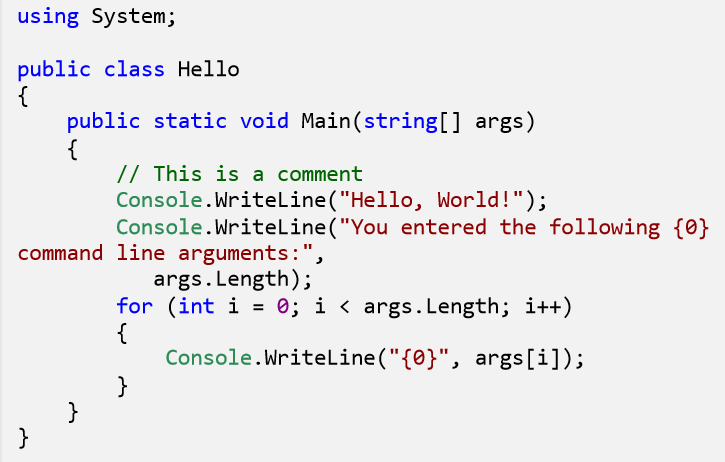

Introducing RichTextControls for rendering HTML and code in UWP apps
Rendering HTML in XAML apps has been a pain since I built my first Silverlight Windows Phone 7 apps. The problem has always been figuring out how far one should go with rendering HTML, because styles and JavaScript can drastically change how elements in a document appear. Typically this has made using a WebView the most convenient approach, lest you implement an entire browser rendering engine to capture everyone’s use case.
Using a WebView isn’t alway the right control, since it has significant overhead and doesn’t play well inside of ListView, Pivot or any other containers allowing gestures. In my case, I wanted to display comments from Disqus in a ListView while supporting its limited HTML markup. There are numerous other web services that use HTML for rendering markup and nothing else, and was my motivation for creating UWP-RichTextControls.
Right now there are two controls:
- HtmlRichTextBlock
- CodeHighlightedTextBlock
We’ll go over each below.
HtmlRichTextBlock

Under the hood, AngleSharp is used for parsing the HTML and does an excellent job, even with inconsistent markup. After parsing an HTML document, each node is converted to either a UIElement or Inline, depending on the type and structure of the markup. This control requires valid nesting, so putting a block-level <h1> inside of a <p> tag won’t do anything special (although you could customize it to do so!).
This is also limited in scope to just HTML (no styles or js), so if you’re looking for something more robust a WebView control might still be the better option.
Basic Example
Add a reference to the RichTextControls namespace in your XAML file.1
xmlns:richTextControls="using:RichTextControls"
Now you can use the control in your xaml1
<richTextControls:HtmlTextBlock Html="{Binding MyHtml}" />
Custom Rendering
If you’re trying to customize how some tags render, or support other HTML tags, you may subclass HtmlXamlGenerator and pass it into the control. Here’s an example we use at Disqus to support a custom <spoiler> html tag.
1 | public class SpoilerHtmlXamlGenerator : HtmlXamlGenerator, IHtmlXamlGenerator |
Now you can pass it to the control:
1 | public IHtmlXamlGenerator SpoilerGenerator = new SpoilerHtmlXamlGenerator("<p>In the movie The Birds, <spoiler>there are birds</spoiler>.</p>"); |
1 | <richTextControls:HtmlTextBlock Html="{Binding MyHtml}" CustomGenerator="{Binding SpoilerGenerator}" /> |
If your tag supports HTML inlines as children, you can also use the AddChildren() or AddInlineChildren() methods. This is an example of how we generate Inlines for <small> tags:
1 | private Inline GenerateSmall(INode node) |
This will create a new Span and call GenerateInlineForNode() to generate inlines for each child node (including plain text) until there are none left.
CodeHighlightedTextBlock

This control will display code with basic syntax highlighting. This implementation is fairly basic, so it shouldn’t be relied on for something like a full code editor. However, it does a decent job at making code a bit more readable for things like comments, blog posts, etc. At the moment, this supports C#, C++, CSS, Java, JavaScript, JSON, PHP, Python, Ruby, SQL, and XML, but does not autodetect the language.
I based this off of the nice example from Adnan Umer’s blog post Developing lexer for Syntax Highlighting, which provided the Python lexer. I added lexers for the rest of the languages, but given my limited experience with some of them, could be of varying quality. If you feel something can be improved, please do contribute!
Basic Example
1 | <richTextControls:CodeHighlightedTextBlock Code="{Binding MyCode}" HighlightLanguage="JavaScript" /> |
Using with HtmlRichTextBlock
This is also used by the HtmlRichTextBlock control if you include the Highlight.js class syntax in your HTML:
1 | <pre> |
What’s Next
I’ll continue to develop this library further when dictated by needs of the Disqus UWP app. For now I need to:
- Add more properties for customizing how individual HTML tags render
- Introduce more test coverage, especially on
CodeHighlightedTextBlock - Check performance and optimize if needed
This project will be on NuGet once I have done that.
In the future I want to create extension methods for RichEditBox to render HTML, and convert the rich markup back to HTML. This would allow a user to use native rich editing and import/export back to HTML for a web service.
If you’re interested in using this for your project, get in touch and we can try to make this project better.